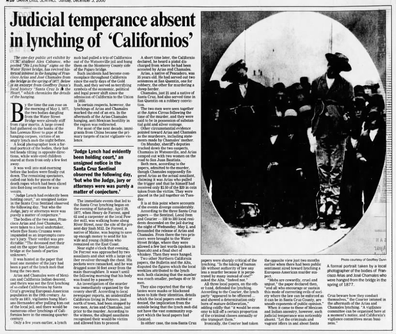

Re-membering the Unseen - Santa Cruz Shadows and the Ghosts of Settler Colonialism
WATER ST LYNCHING

Address: Water St Bridge by San Lorenzo River. Date: May 3, 1877
Talk here!!
Additional Resources:
• "Hanging on the Water Street Bridge: A Santa Cruz Lynching" • "The 1850s and the Double D's: Drought and Depression"Hear more truths?
Click any of the links below.